6.810 Engineering Interactive Technologies (fall 2018)
Rotoscope
Upload (Oct 12, 2.30pm):
Upload to gradebook your rotoscope (each team member should make their own, maybe make one overview drawing and one detail drawing so you have two nice ones already).
Goal
We are going to show you how you can create rotoscopes, i.e. good drawings of your group project idea.
Please read this first (10 min) and then start drawing, it will save you time later.
See examples below.
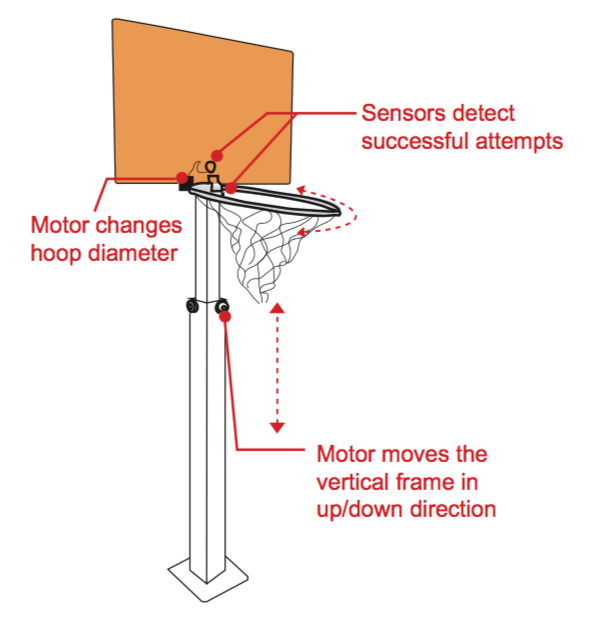 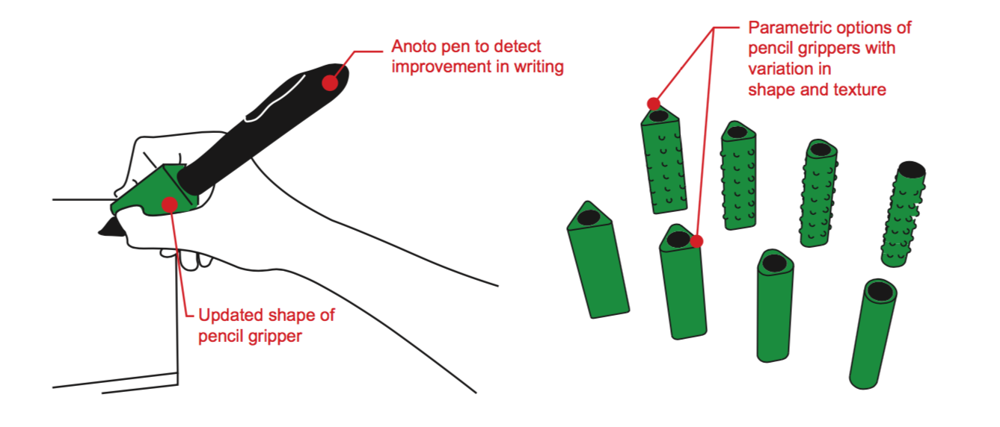
What are Rotoscopes?
I'm terrible at drawing -- this is why I love rotoscopes!
The idea of rotoscopes is that you draw over photos you can find e.g. on google search or just take with your phone.
It is super practical for any type of idea pitches, e.g. client pitches when competing with other startups, investment pitches, grant proposals.
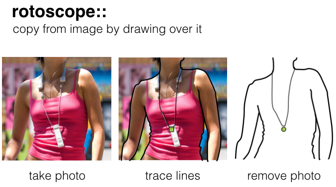
Here are two more examples from my research lab (made by my former postdoc Parinya Punpongsanon):
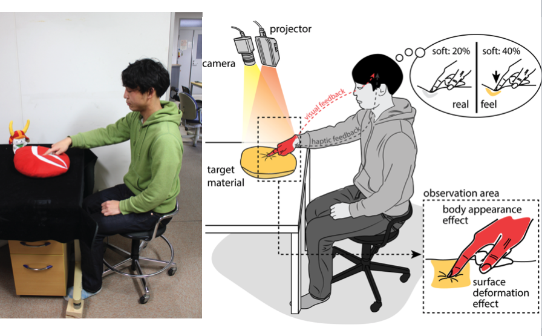
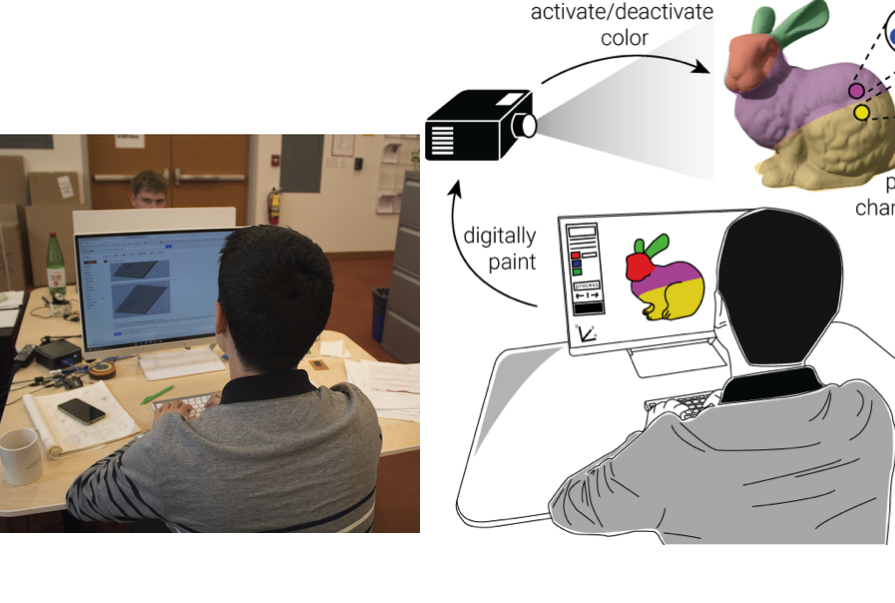
Why use Rotoscopes?
Rotoscope allow to communicate ideas without focusing on too much on the details, i.e. they are more abstract. They are also more scalalable than photos.
Recommended Read:
Understanding Comics
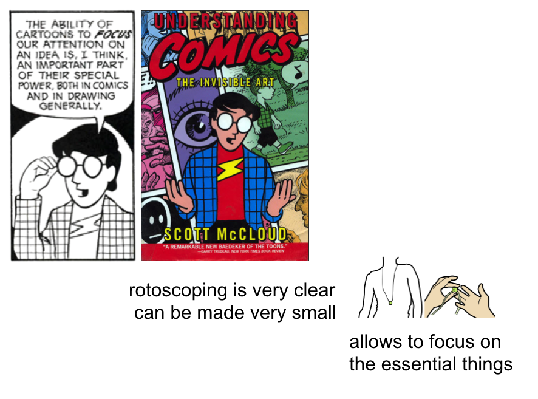

Useful Tips and Tricks
Before getting started, look at some of the example drawings more careful.
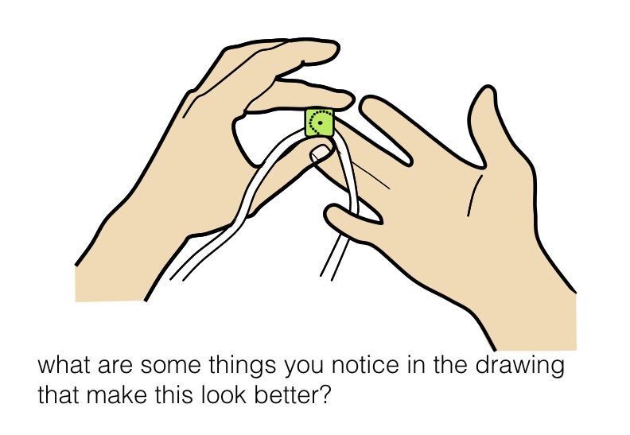
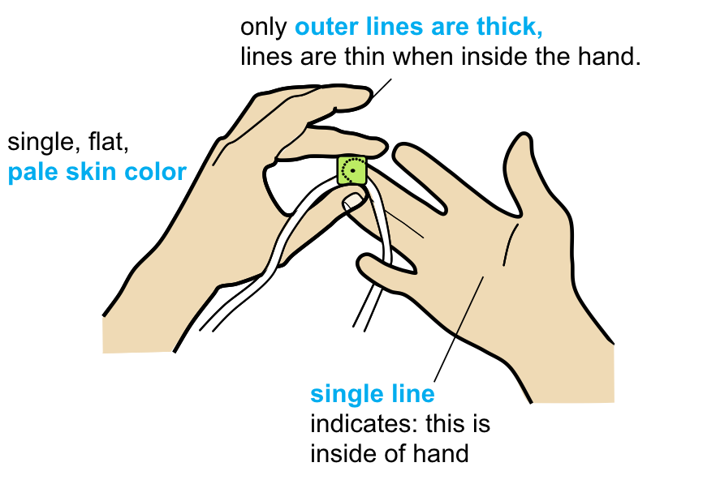
They come from this paper:
Back-of-device interaction allows creating very small touch devices (CHI 2009)
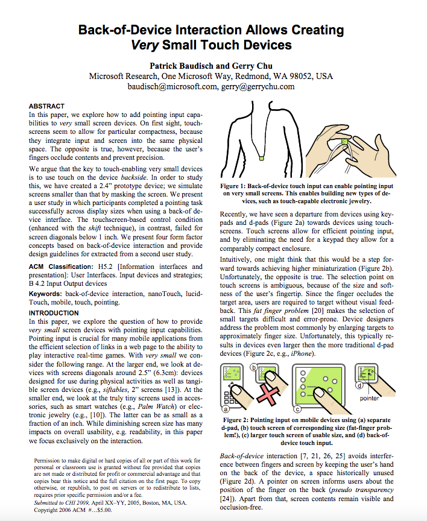
 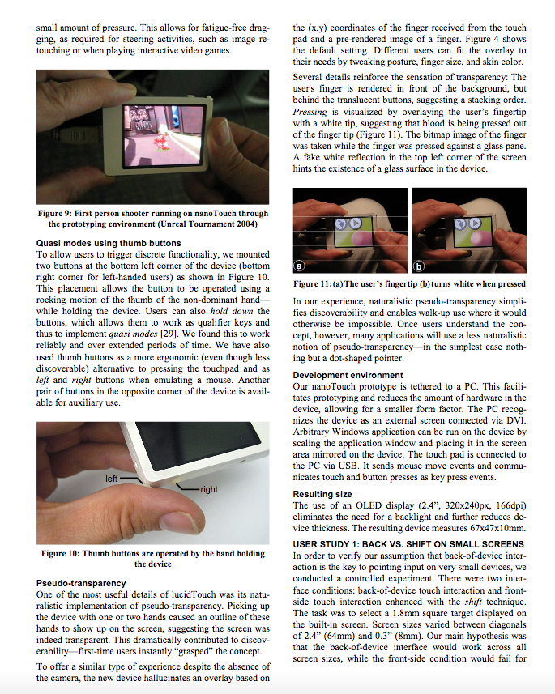
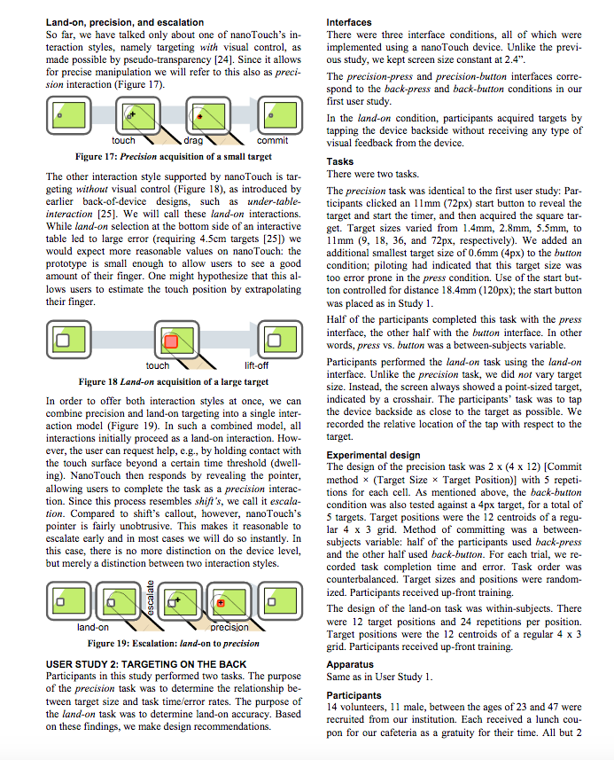
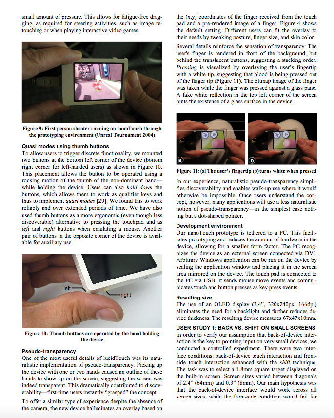
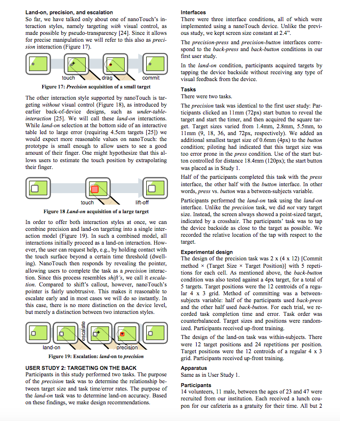
And one more:
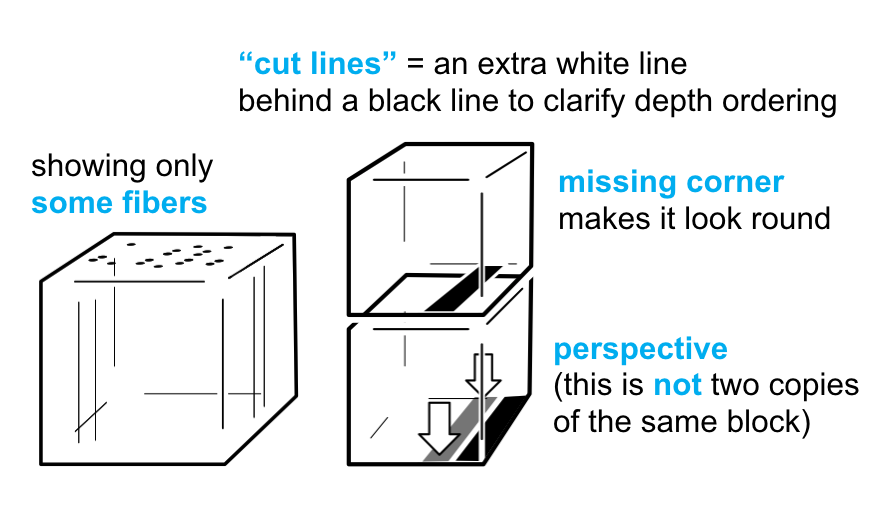
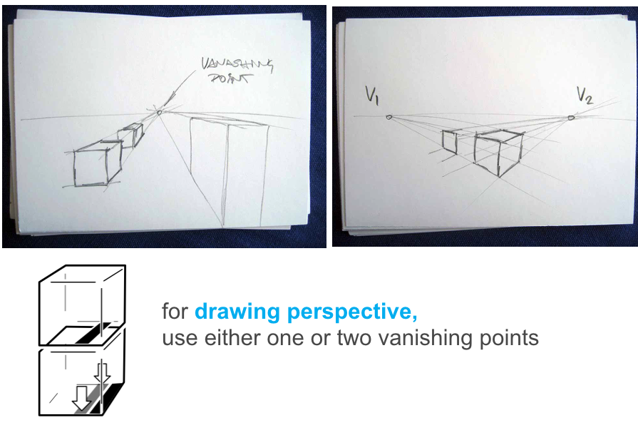
They come from this paper:
Lumino: tangible blocks for tabletop computers based on glass fiber bundles (CHI 2010)
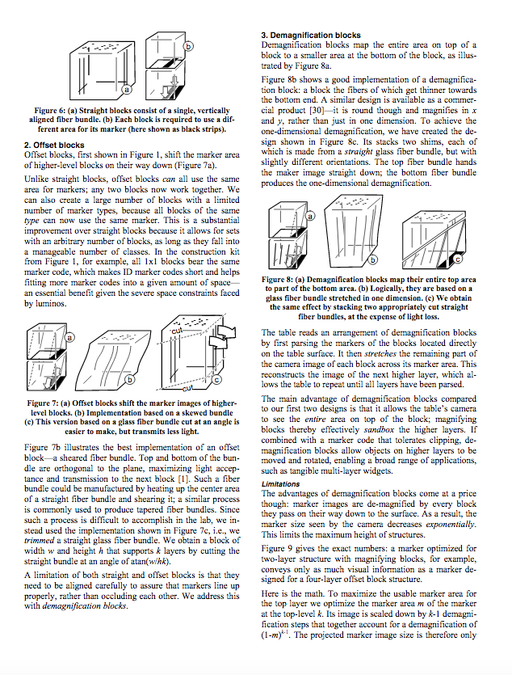
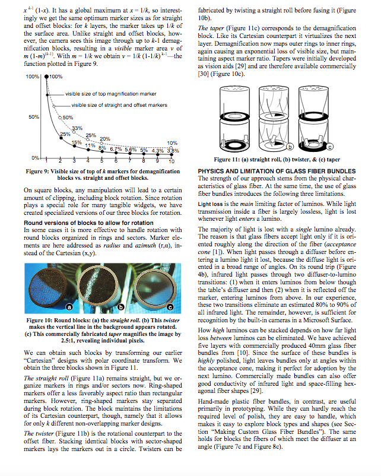
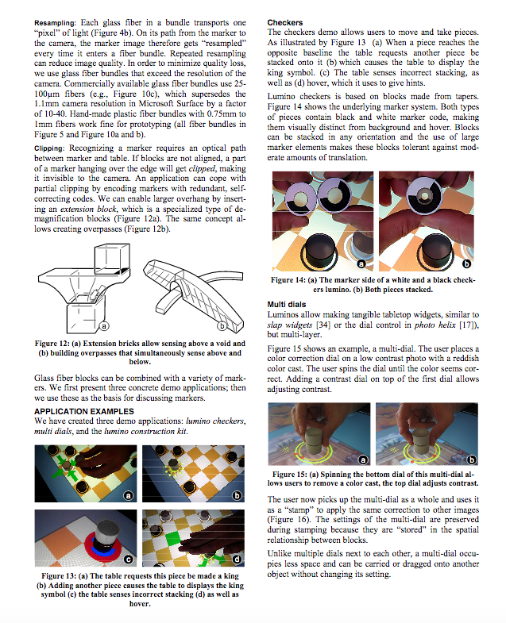
Reuse and Collections
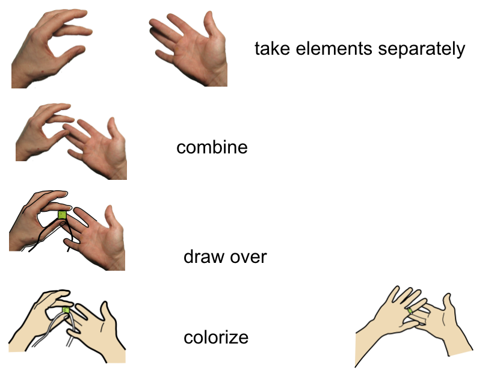
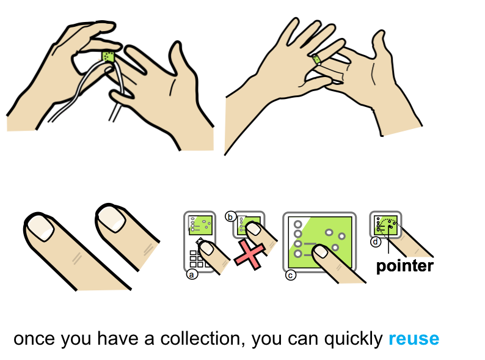
Make yourself a template file so everything is consistent
Make sure all your drawings are consistent (not that one has 0.75pts outline and the next 0.5pts, it just looks messy and distracts). Here's what I use for paper figures.

Getting Started
Open your drawing program (Illustrator, inkscape, OpenDraw).
Then follow the instructions below.
Illustrator
OpenDraw
Inkscape